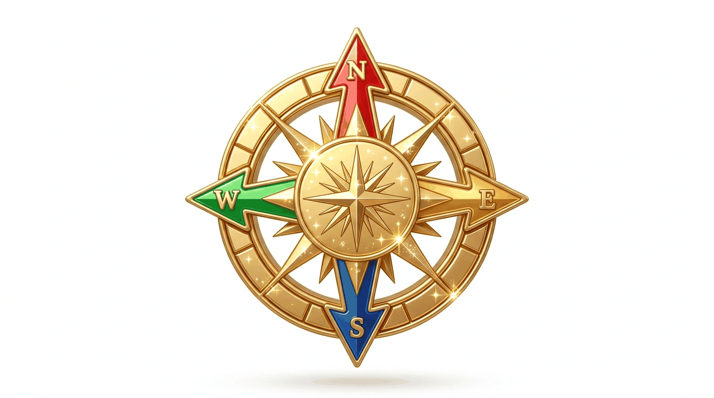

الوحدة الأولى: اتجاهاتنا ترسم خطواتنا • الجزء الأول
المخطط هو رسم توضيحي مصغر للمكان (مثل مخطط المنزل أو المدرسة) كأننا ننظر إليه من أعلى، ليساعدنا في تحديد مواقع الغرف والأبواب والخدمات بسهولة ويسر.

| نوع الاتجاهات | الاتجاهات الأربعة | الموقع والتقابل |
|---|---|---|
| الاتجاهات الأصلية (4) | • الشمال (North ⬆️) • الجنوب (South ⬇️) • الشرق (East ➡️) • الغرب (West ⬅️) |
• الشمال يقابله الجنوب. • الشرق يقابله الغرب. • تشرق الشمس من الشرق وتغرب من الغرب. |
| الاتجاهات الفرعية (4) | • الشمال الشرقي ↗️ • الشمال الغربي ↖️ • الجنوب الشرقي ↘️ • الجنوب الغربي ↙️ |
• الشمال الشرقي يقابله الجنوب الغربي. • الشمال الغربي يقابله الجنوب الشرقي. • تقع بين اتجاهين أصليين دائماً. |
اقف الصبح وافرد إيدك اليمين ناحية طلوع الشمس: إيدك اليمين = الشرق.. إيدك الشمال = الغرب.. وشك باصص على = الشمال.. وضهرك وراك = الجنوب.. كده مستحيل تتوه أبداً في أي مكان!
الخريطة: هي رسم توضيحي لسطح الأرض أو جزء منه باستخدام مجموعة من الرموز والألوان وبمقياس رسم محدد.

| عنصر الخريطة | الوظيفة والأهمية الاستخدامية |
|---|---|
| 1- عنوان الخريطة | يشير إلى ما تحتويه الخريطة من بيانات ومعلومات (مثال: خريطة حدود مصر أو تضاريس مصر). |
| 2- وردة البوصلة | توضح الاتجاهات الأصلية والفرعية وتساعدنا في تحديد موقع معين على الخريطة بالنسبة للمواقع الأخرى. |
| 3- مقياس الرسم | هو النسبة بين المسافة على الخريطة وما يقابلها على الطبيعة (مثال: كل 1 سم على الخريطة = 100 كم على الطبيعة). |
| 4- مفتاح الخريطة | دليل يوضح معنى الألوان والرموز الموجودة على الخريطة (الأزرق للمياه، البني للجبال، الخط الأحمر للحدود). |
| 5- شبكة الإحداثيات | تتكون من خطوط الطول ودوائر العرض لتحديد الأماكن بدقة فلكية متناهية. |
( أ- الشرق | ب- الجنوب | جـ- الغرب | د- الشمال الشرقي )
( أ- الجنوب الشرقي | ب- الشمال الغربي | جـ- الشمال الشرقي | د- الجنوب الغربي )
( أ- عنوان الخريطة | ب- مقياس الرسم | جـ- وردة البوصلة | د- خطوط الطول )
( أ- السائح | ب- الفلاح | جـ- الطيار | د- الضابط )
( أ- 50 كم | ب- 100 كم | جـ- 200 كم | د- 300 كم )
الإجابة: ................................................................................................................................................................................
الإجابة: ................................................................................................................................................................................
الإجابة: ................................................................................................................................................................................
1- الخريطة (الرسم التوضيحي المعتمد بالرموز والألوان ومقياس الرسم).
2- مقياس الرسم (حساب نسبة التصغير بين الورقة والطبيعة الحقيقية).
3- وردة البوصلة (تحدد الاتجاهات الأصلية الأربعة والفرعية الأربعة).
4- مفتاح الخريطة (المربع أو المستطيل التوضيحي لرموز وألوان الخريطة).
5- شبكة الإحداثيات (خطوط الطول ودوائر العرض) (لتحديد المواقع الفلكية الجغرافية بدقة).
(1) ب- الجنوب | لأن الشمال والجنوب اتجاهان أصليان متقابلان.
(2) جـ- الشمال الشرقي | اتجاه فرعي يجمع بين الشمال والشرق.
(3) أ- عنوان الخريطة | يوضح موضوع الخريطة وما تدور حوله من بيانات.
(4) ب- الفلاح | لمعرفة مساحات وحدود أراضيه الزراعية بدقة.
(5) جـ- 200 كم | الحساب: 2 سم × 100 كم = 200 كم على الطبيعة.
(1) ( ✗ ) خطأ. التصويب: الاتجاهات الأصلية عددها أربعة (شمال، جنوب، شرق، غرب).
(2) ( ✓ ) صواب. حقيقة جغرافية وفلكية ثابتة.
(3) ( ✓ ) صواب. ترشده إلى الأماكن السياحية ومسارات الطرق إليها.
(4) ( ✗ ) خطأ. التصويب: لا يمكن معرفة المسافات الحقيقية بدقة بدون مقياس الرسم.
(5) ( ✗ ) خطأ. التصويب: اللون الأزرق يدل على المسطحات المائية والبحار والأنهار، بينما البني للمرتفعات.
السؤال الرابع: (1) الغرب | (2) مقياس الرسم.
السؤال الخامس (بم تفسر):
(1) لأنها توضح الاتجاهات الأصلية والفرعية وتساعدنا في تحديد موقع أي مكان بدقة على الخريطة بالنسبة للأماكن الأخرى.
(2) الفلاح: في تحديد ملكية الأراضي الزراعية • الطيار: في تحديد مسار الطائرة واتجاهات الهبوط والمطارات.
السؤال السادس (ماذا يحدث إذا):
(1) لن نعرف موضوع الخريطة أو عما تعبر عنه، وسيصعب فهم الرموز والألوان وقراءة معلوماتها بالشكل الصحيح.